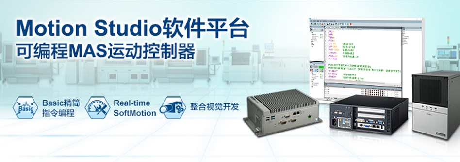

自动锁螺丝机是自动化产线中出现频率很高的设备， 用于取代传统手工拧紧螺丝的机器。自动锁螺丝机一般会要求上料、取料、螺丝输送、锁附、 检验等动作全自动完成。随着产线自动化生产要求越来越高，自动锁螺丝机要能提供更高速的生产 方式，并能很好结合运动控制与图像检测，以减少人工操作成本与降低错误率。此外，设备还需应 对现实中少量多样生产的状况，柔性的根据实际需求做程序改动，定制出各种非标生产应用，同时 还可能要接入工厂网络系统，实现设备联网，这对控制器的配置也是一个必须考量的重点。
研华基于Motion Studio快速二次开发软体平台的MAS控制器，整合运动 控制与视觉图像处理开发于一体，使用简单的Basic语言编程，很轻易的完成顺序流程衔接控制，可实现 高速高精度的锁螺丝流程。同时，Motion Studio中支持多任务同时执行、视窗化操作修改图像处理流程、 工单管理模块等，可很方便的实现模块化编程，工单程序修改及维护，很好的应对了现代锁螺丝机应用的控 制需求。